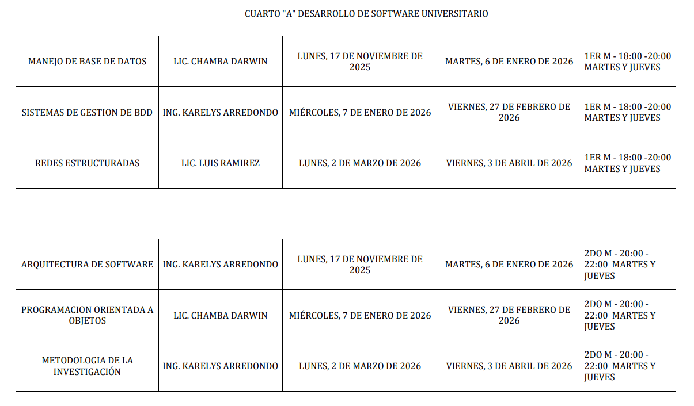
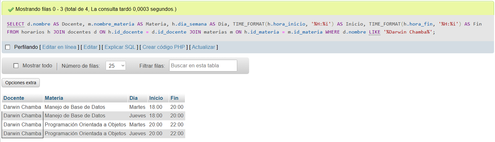
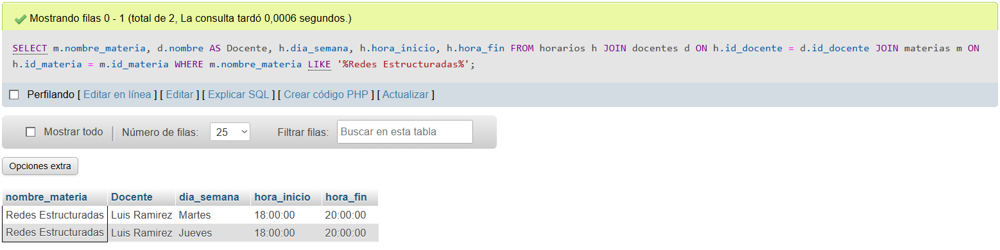
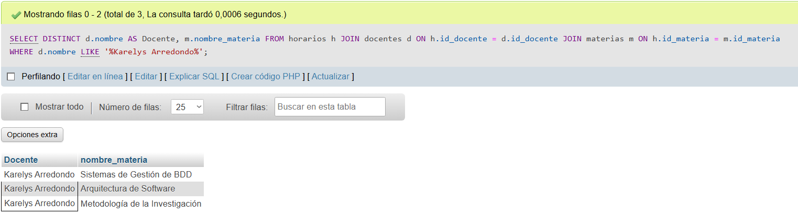
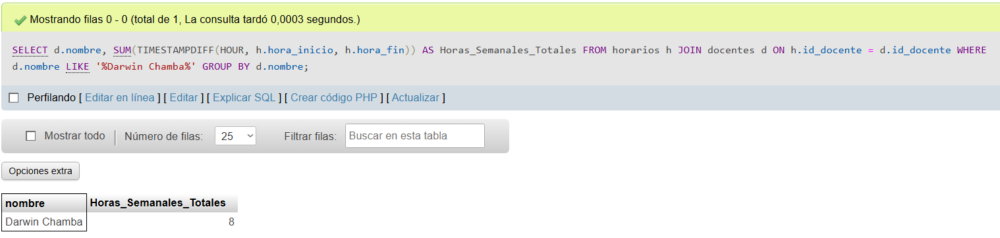
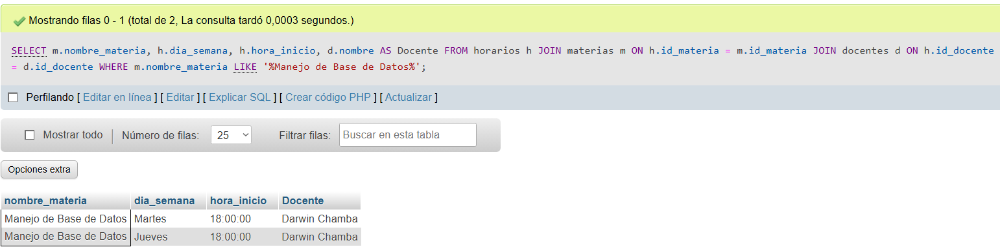
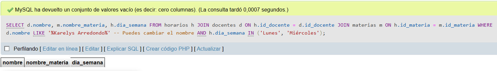
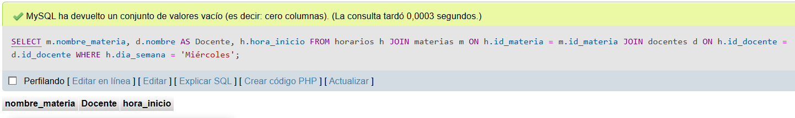

1. Estructura y Normalización
Referencia: Horario Original
Se toma como base la siguiente imagen del horario de Desarrollo de Software (Cuarto "A") para realizar la normalización.

Diagrama ER Normalizado
Modelado realizado en dbdiagram.io.
Se identificaron 3 entidades principales: Docentes, Materias y Horarios (Entidad asociativa que vincula día, hora, docente y materia).
Modelo Relacional

-- 1. CREACIÓN DE TABLAS
CREATE TABLE docentes (
id_docente INT AUTO_INCREMENT PRIMARY KEY,
nombre VARCHAR(100) NOT NULL,
titulo VARCHAR(50)
);
CREATE TABLE materias (
id_materia INT AUTO_INCREMENT PRIMARY KEY,
nombre_materia VARCHAR(100) NOT NULL,
fecha_inicio DATE,
fecha_fin DATE
);
CREATE TABLE horarios (
id_horario INT AUTO_INCREMENT PRIMARY KEY,
id_materia INT,
id_docente INT,
dia_semana VARCHAR(20),
hora_inicio TIME,
hora_fin TIME,
FOREIGN KEY (id_materia) REFERENCES materias(id_materia),
FOREIGN KEY (id_docente) REFERENCES docentes(id_docente)
);
-- 2. INSERTAR DATOS (Ejemplo resumido)
INSERT INTO docentes (nombre, titulo) VALUES
('Darwin Chamba', 'Lic.'), ('Karelys Arredondo', 'Ing.'), ('Luis Ramirez', 'Lic.');
-- NOTA: Las inserciones de horarios respetan que las clases son MARTES y JUEVES
-- según la columna "Horario" de la imagen de referencia.
2. Resolución de Consultas
A continuación se presentan las 7 consultas solicitadas, con su respectiva evidencia y justificación basada en el horario.
Docente consultado: Lic. Darwin Chamba
SELECT d.nombre, m.nombre_materia,
h.dia_semana, h.hora_inicio, h.hora_fin
FROM horarios h
JOIN docentes d ON h.id_docente = d.id_docente
JOIN materias m ON h.id_materia = m.id_materia
WHERE d.nombre LIKE '%Darwin Chamba%';
El sistema devuelve 4 registros. Según el horario base, el Lic. Chamba imparte "Manejo de Base de Datos" (18:00-20:00) y "POO" (20:00-22:00). Al ser clases martes y jueves, aparecen 2 registros por cada materia.
Materia consultada: Redes Estructuradas
SELECT m.nombre_materia, d.nombre,
h.dia_semana, h.hora_inicio
FROM horarios h
JOIN docentes d ON h.id_docente = d.id_docente
JOIN materias m ON h.id_materia = m.id_materia
WHERE m.nombre_materia LIKE '%Redes Estructuradas%';
La consulta identifica correctamente al Lic. Luis Ramirez. El horario indica que esta materia es el tercer módulo (Marzo-Abril), dictada Martes y Jueves de 18:00 a 20:00.
Docente consultado: Ing. Karelys Arredondo
SELECT DISTINCT d.nombre, m.nombre_materia
FROM horarios h
JOIN docentes d ON h.id_docente = d.id_docente
JOIN materias m ON h.id_materia = m.id_materia
WHERE d.nombre LIKE '%Karelys Arredondo%';
Se utiliza DISTINCT para no repetir días. La Ing. Arredondo dicta 3 materias según la imagen: "Sistemas de Gestión de BDD", "Arquitectura de Software" y "Metodología de la Investigación".
Docente consultado: Lic. Darwin Chamba
SELECT d.nombre,
SUM(TIMESTAMPDIFF(HOUR, h.hora_inicio, h.hora_fin))
AS Horas_Semanales
FROM horarios h
JOIN docentes d ON h.id_docente = d.id_docente
WHERE d.nombre LIKE '%Darwin Chamba%';
El docente tiene 2 materias. Cada materia son 2 horas el martes y 2 horas el jueves (4 horas/materia). Total: 8 horas semanales. El cálculo SQL confirma este valor.
SELECT m.nombre_materia, h.dia_semana,
h.hora_inicio, d.nombre
FROM horarios h
JOIN materias m ON h.id_materia = m.id_materia
JOIN docentes d ON h.id_docente = d.id_docente
WHERE m.nombre_materia LIKE '%Manejo de Base de Datos%';
Muestra correctamente que la materia está a cargo del Lic. Chamba y se dicta los días Martes y Jueves a las 18:00 horas.
Filtro: Días Lunes o Miércoles
SELECT d.nombre, m.nombre_materia, h.dia_semana
FROM horarios h
JOIN docentes d ON h.id_docente = d.id_docente
JOIN materias m ON h.id_materia = m.id_materia
WHERE d.nombre LIKE '%Karelys Arredondo%'
AND h.dia_semana IN ('Lunes', 'Miércoles');
El resultado es VACÍO (0 registros). Esto es correcto porque la columna de horarios especifica explícitamente "MARTES Y JUEVES" para todas las asignaturas.
Filtro: Día Miércoles
SELECT m.nombre_materia, d.nombre, h.hora_inicio
FROM horarios h
JOIN materias m ON h.id_materia = m.id_materia
JOIN docentes d ON h.id_docente = d.id_docente
WHERE h.dia_semana = 'Miércoles';
El resultado es VACÍO. Según la imagen del horario proporcionado, ninguna materia tiene horas clase asignadas para el día miércoles.